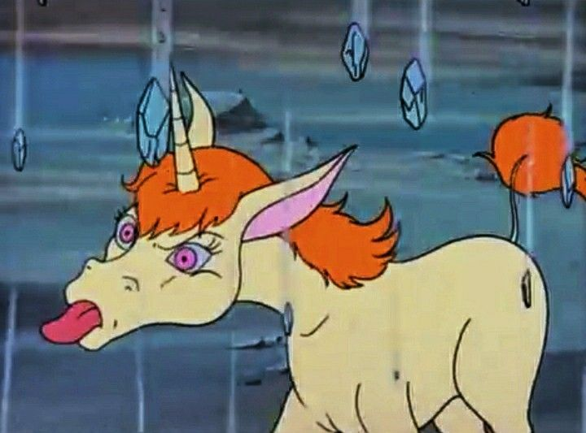
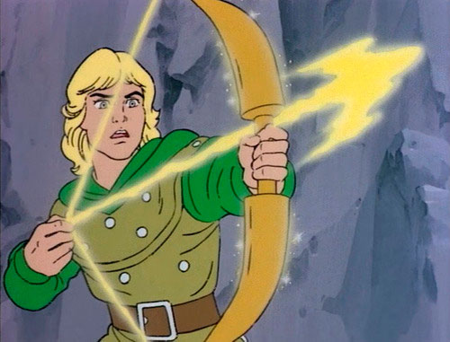
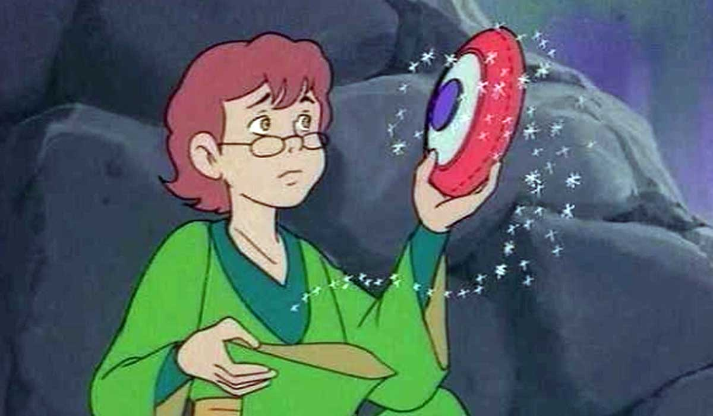

-
Bobby (Bárbaro)
Irmão caçula impulsivo, usa um tacape que causa terremotos.
-

Uni
A sequência mágica que continua a história de Encantada, trazendo novos desafios e aventuras.
-
Diana (Acrobata)
Ágil, forte e confiante, luta com um bastão mágico.
-
Eric (Cavaleiro)
Medroso e reclamão, mas fiel, com escudo que repele ataques.
-

Hank (Arqueiro)
Líder corajoso e justo, usa um arco mágico de energia.
-

Presto (Mago)
Desastrado e inteligente, conjura feitiços com chapéu mágico.
-

Mestre dos Magos
Enigmático guia do grupo, aparece e some misteriosamente.
-
Vingador
Vilão poderoso, quer capturar os heróis e controlar seus artefatos.
-
Sheila (Ladra)
Irmã protetora de Bobby, fica invisível com sua capa mágica.